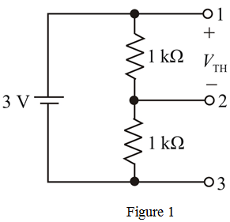
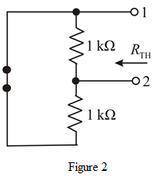
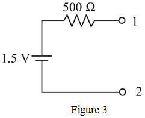
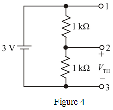
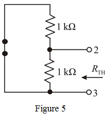
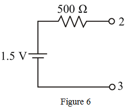
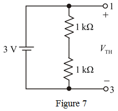
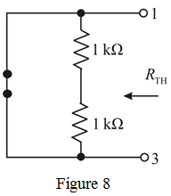
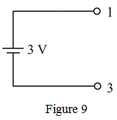

Refer to Figure P1.14 in the textbook.
(a)
Draw the circuit diagram to calculate the Thevenin voltage between the terminals 1 and 2.

Calculate the Thevenin voltage, using voltage divider rule.
Draw the circuit diagram to calculate the Thevenin equivalent resistance.

From Figure 2,
Draw the Thevenin equivalent circuit between terminals 1 and 2.

(b)
Draw the circuit diagram to calculate the Thevenin voltage between the terminals 2 and 3.

Draw the circuit diagram to calculate the Thevenin equivalent resistance.

From the above circuit,
Draw the Thevenin equivalent circuit between terminals 2 and 3.

(c)
Draw the circuit diagram to calculate the Thevenin voltage between the terminals 1 and 3.

From Figure 7, the Thevenin voltage is,
Draw the circuit diagram to calculate the Thevenin equivalent resistance.

From Figure 8, the Thevenin resistance is,
